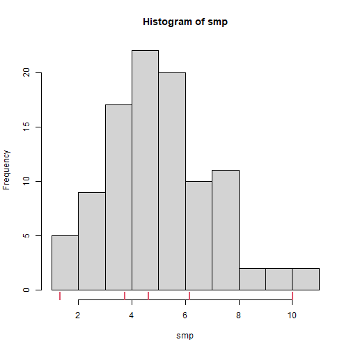
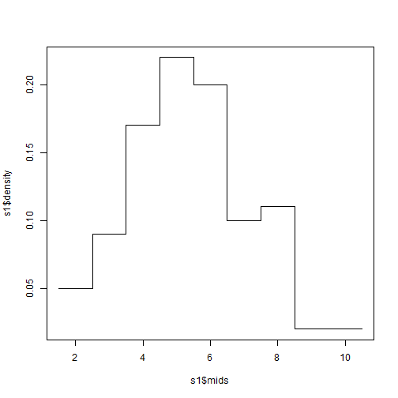
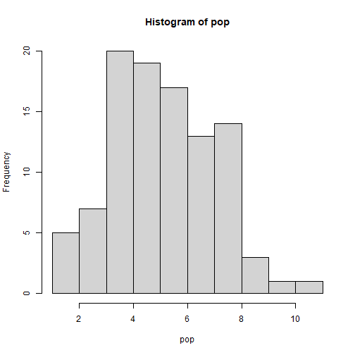
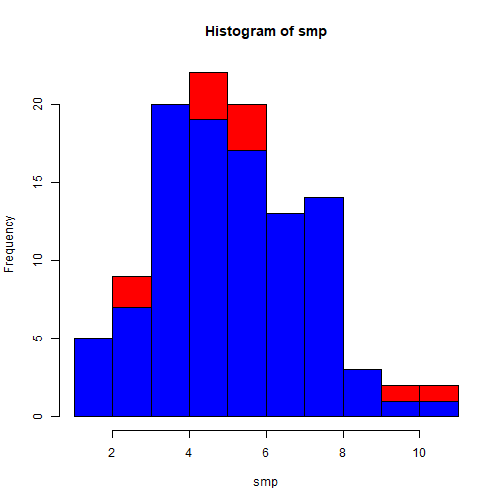
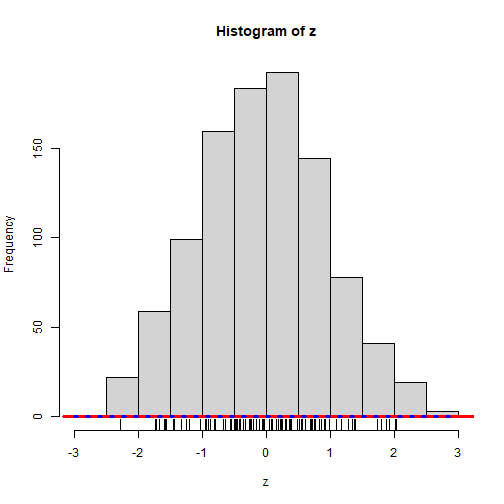
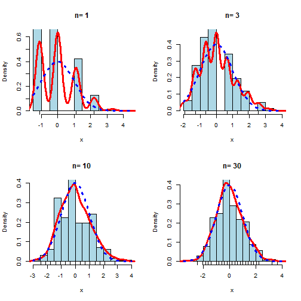

N<-100
pop<-rnorm(N,5,2)
rndno<-as.integer(runif(N)*N)+1
smp<-pop[rndno]
ss<-summary(smp)
s1<-hist(smp)
rug(quantile(smp), col=2, lwd=2.5)
plot(s1$mids,s1$density,type="s") #quiz:barplot??
s2<-hist(pop)
plot(s1,col="red")
lines(s2,col="blue") 
## 內建隨機抽樣
函數sample(x,n,replace=FALSE ).
其中x為要抽取的向量, n為樣本容量. replace 預設為false
例如從52張撲克牌中抽取5張:
sample(1:52, 5)
#> [1] 12 21 20 13 46replacement:
例如拋一枚均勻的硬幣10次
sample(c("H", "T"), 10, replace=T)
#> [1] "T" "T" "T" "H" "T" "H" "H" "T" "H" "T"練習:一棵骰子擲10次可表示為:
3) 不等可能的隨機抽樣:
sample(x, n, replace=TRUE, prob=y)
prob=y指定x中元素出現的概率, 向量y與x等長度. 例如一娃娃機取出成功的概率為0.6, 那麼10次的試驗為:
sample(c("sucess", "fail"), 10, replace=T, prob=c(0.6,0.4))
#> [1] "sucess" "sucess" "sucess" "sucess" "sucess" "fail" "sucess" "sucess"
#> [9] "sucess" "fail"例 從一副52張撲克中取4張, 求以下事件的概率:
1. 抽取的4張依次為紅心A，方塊A，黑桃A和梅花A的概率;
2. 一次抽取4張為紅心A，方塊A，黑桃A和梅花A的概率.
his summation expression $\sum_{i=1}^n X_i$ appears inline.
解
1) 抽取的4張是有次序的, 因此使用排列來求解. 所求的事件(記為A)概率為 $P(A)=\frac{1}{52 \times 51 \times 50 \times 49}$
利用R函數
1/prod(52:49)
#> [1] 1.539077e-07$$ P(B)=\frac{1}{(52,4)} $$
其中 $(n,m)=\frac{n!}{m!(n-m)!}$,可以利用函數choose(),例如
1/choose(52,4)
#> [1] 3.693785e-06標準表格上下沒有線條,左右有
| 名稱 | R函數 | 選項 |
|---|---|---|
| beta | beta | shape1, shape2 |
| binomial | binom | size, prob |
| Cauchy | cauchy | location=0, scale=1 |
| chi-sqaured ($\chi^2$) | chisq | df, ncp |
| exponential | exp | rate |
| Fisher (F) | f | df1, df2, ncp |
| gamma | gamma | shape, scale=1 |
| geometric | geom | prob |
| hypergeometric | hyper | m, n, k |
| lognormal | lnorm | meanlog=0, sdlog=1 |
| logistic | logis | location=0, scale=1 |
| multinomial | multinom | size, prob |
| normal | norm | mean=0, sd=1 |
| negative binomial | nbinom | size, prob |
| Poisson | pois | lambda |
| Student’s (t) | t | df |
| uniform | unif | min=0, max=1 |
| Weibull | weibull | shape, scale=1 |
| Wilcoxon’s statistics | wilcox | m, n |
| signrank | n |
對於所給的分佈名稱，有四類。
以func為例， 四類函數的對應為:
1. 「d」概率密度函數: dfunc(x, p1, p2, …), x為數值向量;
1. 「p」(累積)分佈函數: pfunc(q, p1, p2, …), q為數值向量;
1. 「q」分位數函數: qfunc(p, p1, p2, …), p為由概率構成的向量;
1. 「r」隨機數函數: rfunc(n, p1, p2, …), n為生成數據的個數
這四類函數的第一個參數是有規律的: 形為dfunc的函數為x，pfunc的函數為q，qfunc的函數為p，rfunc的函數為n
note:
(但rhyper和rwilcox是特例，他們的第一個參數為nn).
非中心參數(non-centrality parameter)僅對CDF和
少數其它幾個函數有效.
$$ \frac{{\sum\limits_{i = 1}^n {{x_i} - n\mu } }}{{\sqrt {n{\sigma ^2}} }} \sim N(0,1) $$
$$ \bar X = \frac{{\sum_{i = 1}^n {{x_i} } }}{n} \sim N(\mu, \sigma^2/n) $$
uniform a~b
$$\mu = (a+b)/2$$
$$\sigma^2=\frac{(b-a)^2}{12} $$
data的每一個ROW有sample size (=i=column)
共1000次(=N=row)
N=1000
i=3 #sample size
mu=0.5
sigma=1/sqrt(12)
data<-matrix(runif(i*N),ncol=i)
rs<-rowSums(data)
rs<-rs/i
z<-(rs-mu)/(sigma/sqrt(i))
hist(z)
lines(density(z), col = 'red', lwd = 3)
x<-z
curve(dnorm(x), col = 'blue', lwd = 3, lty = 3, add = T)
rug(sample(z,100))
limite.central <-
function (r = runif, distpar = c(0, 1), m = .5, s = 1 / sqrt(12), n = c(1, 3, 10, 30), N = 1000) {
for (i in n) {
if (length(distpar) == 2) {
x <-matrix(r(i * N, distpar[1], distpar[2]), nc = i)
} else {
x <-matrix(r(i * N, distpar), nc = i)
}
x <-(apply(x, 1, sum) - i * m) / (sqrt(i) * s)
hist(x, col = 'light blue', probability = T, main = paste("n=", i),
ylim = c(0, max(.4, density(x) $y)))
lines(density(x), col = 'red', lwd = 3)
curve(dnorm(x), col = 'blue', lwd = 3, lty = 3, add = T)
if (N > 100) {
rug(sample(x, 100))
} else {
rug(x)
}
}
}
op <- par(mfrow=c(2,2))
limite.central(rbinom, distpar=c(10 ,0.1), m=1, s=0.9)
par(op)